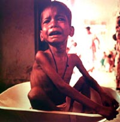
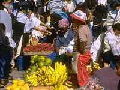
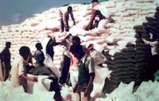

Dimensions of Hunger
Feeding the World
World Food Production
Food Trade Surplus
Food Aid
Population Growth
| In recent times, food production has increased at a greater rate than population. At present, per capita food production is 18% greater than 30 years ago. On a global basis we have enough food to supply 2700 calories a day per person, but these supplies are not distributed evenly. In Western Europe and North America, we have supplies of about 3500 calories a day per person whereas Africa can only supply about 2300 calories. Even so, there are over 800 million malnourished people in the developing countries. Several million people suffer debilitating diseases due to lack of micronutrients and to food and water contamination. In the developing world one out of every five persons does not have enough food to meet daily requirements. In some parts of Africa, the ratio increases to two or three out of every five. |
|

There seems to be enough food in the world so why is there hunger? No simple explanation accounts for the hunger afflicting large segments of the world population. Widespread hunger is most likely to occur in Third World countries of the Southern Hemisphere, particularly in Asia and Africa. But hunger is not limited to underdeveloped and developing countries. The rise in the use of food banks in North America indicated that hunger exists in the industrialized world--although famine, a general scarcity of food leading to mass starvation, has been almost unknown in the Northern Hemisphere this century, except for the Ukraine in the 1930s. A universal cause of hunger is dire poverty, sometimes worsened by war, political upheaval and natural disasters like earthquakes and floods. An imbalance in the distribution of wealth leads to a concentration of power and resources in the hands of a few, leaving the majority without access to adequate food, jobs, health-care and education.
 About 1.4 billion hectares of the earth's land is cultivated. World food production has doubled since the 1950s, due to advances in agriculture and a larger area farmed. Enough food is grown to feed the world, but unequal distribution results in hunger for large segments of the human population. The distribution of food has become more efficient, yet food often does not reach the hungry. Partisan politics, greed, the concentration of power in too few hands, all hamper efforts to get food to the malnourished. The joint efforts of world aid organizations, concerned citizens and governments are necessary to end world hunger. A country in which demand for food outstrips production has a food trade deficit. Where food production is greater than domestic consumption, a food trade surplus exists. Developed countries with a large agricultural land base in relation to population are mainly food exporters. Countries that lack the land base, or are underdeveloped, tend to be importers. Aid to underdeveloped countries takes many forms. Bilateral aid is the transfer of goods and services from one government to another. Multilateral aid is the transfer of goods and services from more than one country through an international institution like UNICEF. Private aid is funnelled directly from donors to the needy through private organizations.
 Cereals, wheat, maize and rice, are the world's main food crops, with the first two grown mainly in developed countries, Canada, U.S.A., France, Russia, China, and Ukraine, are leading wheat producers. Some countries export cash crops such as coffee and sugar cane, crops often grown in plantations on the best land, despite the hunger experienced by parts of their population. Famine occurs not simply because of food shortages, but because the hungry have no means of buying what is available in local markets. Only twenty percent of world food production is consumed directly by human beings. Some grains are fed to livestock and subsequently consumed as meat or dairy products. A regrettable amount of food is lost to pests and spoilage in the field, and in storage, particularly in tropical regions. The food distribution system at the global level involves transportation, storage, processing and retailing, with some loss to spoilage at all stages. Despite sophisticated methods of food storage and transport, a considerable amount of food does not reach consumers. The loss of food at the retail stage is sometimes due to a gap between supply and demand. The supply may be in excess of the demand, or the demand may be there but the local economy is poor and too few consumers can pay the price. Many countries which have had a problem with hunger, such as Sri Lanka, have significantly improved national nutritional levels by instituting a system of food subsidies, ensuring that the demand for food is met by a plentiful and affordable food supply.

Food Trade Surplus and Food Trade Deficit Food trade surplus countries like Canada may be major importers in the global economy, while food trade deficit countries often export cash crops. A country tries to import food that it is unable to produce itself. Underdeveloped countries tend to export labour-intensive food products, while industrialized countries tend to export capital-intensive crops. The Third World relies on a large inexpensive labour pool, while the industrialized world is much more highly-mechanized in its food production. Natural disasters such as floods, earthquakes and hurricanes can disrupt the production and distribution of food in countries with inadequate emergency food stocks. War and political upheaval are major contributing factors to famine. Production is interrupted, and food that is produced may go to feed armies or be traded for weapons. Access to arable land is limited where land is controlled by large land owners, the poor have sold their land for food, or a system of inheritance has divided plots of land into smaller and smaller portions. Crops have always been vulnerable to pests, and modern agriculture has not entirely solved that problem, even with the use of pesticides.
Food Aid Donors and Recipients Aid packages alleviate hunger in many countries world-wide. Unfortunately aid may be complicated by the politics of donor and recipient countries, and may be withdrawn if donor governments disapprove of political changes in the recipient government. As a result, middle income countries such as Egypt may receive more aid than a poorer country where the need may be greater. Food aid in emergency situations is a humanitarian act for prosperous countries like Canada, making the difference between life and death for many of the world's hungry. Sacks of grain are distributed to the hungry. Food aid is one of the most widely-known forms of aid, although it makes up only about one tenth of all aid packages. Food aid may be used for disaster-relief, as part of a larger project such as food-for-work, or as a donation made to supplement the recipient government's budget.
Hunger and Human Population Growth Most of us link hunger to an exploding population of human beings; gobbling up resources and polluting the planet at the same time. But is this concept is too simple. What about countries such as Japan where population densities are the highest in the world - yet hunger is rare? How fast is the population really growing? Will it level off? Our predictions of human population growth are only guesses. There are many theories and vastly different opinions as to population predictions. One of the most famous theorists was Thomas Robert Malthus (1766-1834). Malthus was a clergyman and economist who stated that population increases faster that the food supply. Specifically, he proposed that population grows geometrically but food supply only arithmetically. The result would be a limit to population growth brought about by starvation and disease. People who follows Malthus' phylosphy are called Malthusians. In the opposing camp are people who totally reject Malthus' ideas. They believe that he underestimates for example - the technology factor. Advances in science and technology could produce more food per capita and clean-up the planet. Population Scenarios In 1994, the United Nations World Populations Estimates & Projections group forecasted stabilization of the number of humans just after 2200 at 11.6 billion individuals. If we take another scenario and fit historical data to an S-shaped curve, the population levels off at 29 billion people.
For the near future, can the world supply enough food for an expanding population? The answer "for the world as a whole" is yes, but regionally we will still have large numbers of hungry people. For everyone to have enough food (greater than 2 700 calories per person per day) world food supplies would have to increase by 3.5% a year, instead of 2.7% as foreseen. The FAO study "Agriculture: Toward the Year 2010" forecasts that the trend towards an increase in per capita food supplies in nearly all developing countries will continue achieving an average of 2730 calories by the year 2010 -- a considerable increase in comparison with the 2520 calories in 1990-92. In spite of this progress, it is still estimated that the number of malnourished people will be between 700 and 800 million by the year 2010. Most malnourished people will continue to be southern Asia and Africa, however, this number will decrease considerably in southern Asia.
|